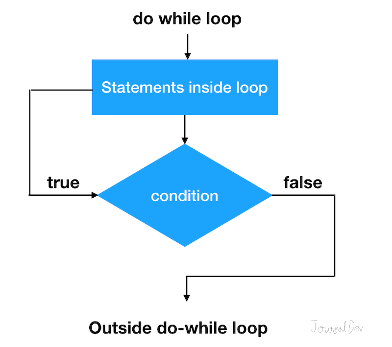
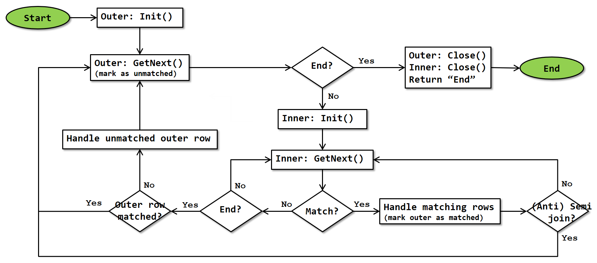

Loop Statement : This defines the time limit to be true for the continuous loop that is contingent on the attached conditional statement.Loop Body : This holds the statement’s code or instruction; it is is executed with each loop cycle.public class whileLoop{
public static void main(){
byte control = 90;
byte times = 0;
// While loop block.
while(control > 5){
control = control - 1;
times = times + 1;
}
}
}
public class Main{
public static void main(){
byte control = 90;
byte console = 0;
do{
control = control - 1;
console = console + 1;
}
while(control > 40);
}
}

1
2
3
4
5
// Program to display numbers from 1 to 5
class Main {
public static void main(String[] args) {
// declare variables
int i = 1, n = 5;
// while loop from 1 to 5
while(i <= n) {
System.out.println(i);
i++;
}
}
}
1
2
3
4
5
// Java Program to display numbers from 1 to 5
class Main {
public static void main(String[] args) {
int i = 1, n = 5;
// do...while loop from 1 to 5
do {
System.out.println(i);
i++;
} while(i <= n);
}
}

public class NestedFor{
public static void main(){
for(byte i = 1; i < 5; i++){
for(byte c = 1; c < 5; c++){
System.out.print(c);
}
}
System.out.print("\n");
}
}
1
1 2
1 2 3
1 2 3 4
1 2 3 4 5
public class Main {
public static void main() {
int rows = 5;
// outer loop
for (int i = 1; i <= rows; ++i) {
// inner loop to print the numbers
for (int j = 1; j <= i; ++j) {
System.out.print(j + " ");
}
System.out.print("\n");
}
}
}
****
***
**
*
public class Main{
public static void main(){
for(byte i = 1; i <5; i++){
for(byte c = 5; c > i; c--){
System.out.print('*');
}
System.out.print("\n");
}
}
}